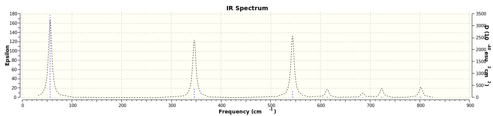
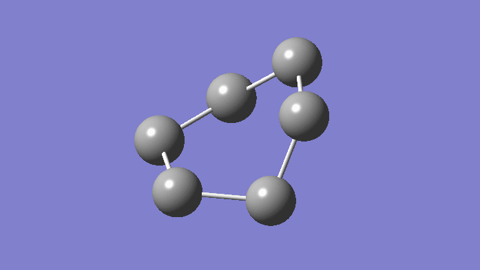
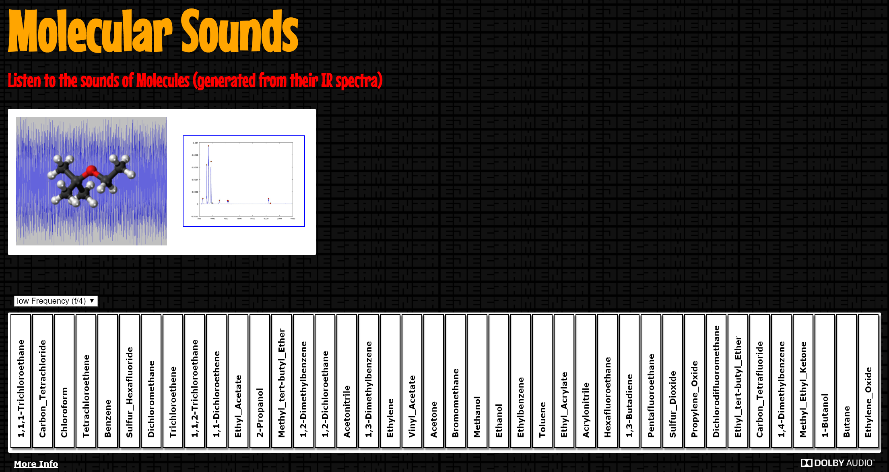

SAN: Audio
Table of Contents
1 Introduction
SAN is a construction system for architectural structures that interact with the environment visually and auditory. This document discusses the auditory part: How can an architectural structure be a musical instrument?

Figure 1: Dodecahedron built by two little girls at the end of Maker Faire Rome. Notice the visualization in the background: The structure understands how it is assembled.
2 Approaches
What follows is a discussion of vairous approaches to turning the structure into sound or even have it generate music.
2.1 Sound of molecular vibrations
2.1.1 Idea
Treat the structure as a molecule made up of carbon atoms. Turn molecular vibrations into a sound.
Like the spherical building elements of SAN, carbon atoms have four bonds arranged in tetrahedral symmetry. Molecules can be made to vibrate. These molecular vibrations have different frequencies which together make up a spectrum:

Figure 2: Molecule with six atoms in one of its 12 possible vibration modes
2.1.2 Examples
Scientists and musicians have explored turning molecular spectra into sound:
Molecular Sounds (ejectamenta), a keyboard with each key mapped to a different molecule and its sound:

Figure 3: Screenshot
Molecular composition based on NMR spectra by Falk Morawitz:
2.1.3 Calculation of vibrations
There are many ways to calculate molecular vibrations. Simple estimates can be done on a piece of paper. Relatively accurate results are given by the harmonic approximation where the bonds between atoms are treated as harmonic oscillators (see the book Molecular Vibrations by Wilson, Decius, and Cross, 1955). Then there are quantum mechanical methods that are ever more accurate and complex.
To get an idea concerning how different spectra look, the software Gaussian 09 can be used:
2.2 Collaborative modular synthesizer
2.2.1 Idea
Each node is module in a big modular synthesizer:
- Using a web UI, users can tweak the properties of individual modules.
- Reconnecting nodes updates how the modular synthesizer is patched. (of course)
2.2.2 A module
Each node has several child nodes and one parent node.
Inputs:
- outputs from the neighboring child nodes
- position of the node in space: x, y, z
Output:
- parent node
There could be various predefined properties, such as pitch or the duration of a repeating loop, that the user can attach inputs to. Also the node could be made freely programmable, perhaps globally for all nodes at once.
The UI for a node could be a webapp compatible with smartphones.
2.2.3 Master output:
There is one root node in the network, which is where the structure is connected to the computer. This root node serves as the master output.
2.2.4 Examples for collaborative synths
- Popular Synth by Carlo Cattano (host of Sonic Code Sessions in Berlin)
- Socket Synthesizer presented by Steve Kinney at JSConf US 2015
2.3 Sequencer
Idea: Walk through the molecule, atom by node. Trigger an action at each step, such as playing a note associated with node.
Open question: Is there a standard way to walk the atoms of a molecule?